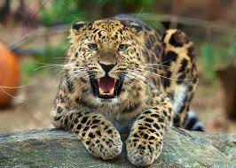
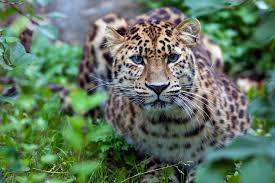
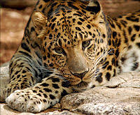
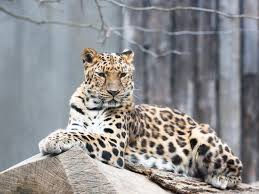
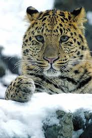

The Amur Leopard is an extraordinarily real animal! Amur leopards are the only Panthera pardus subspecies adapted to a cold snowy climate. It is a leopard subspecies native to the Primorye region of southeastern Russia and the Jilin Province of northeast China.
The Amur leopards differ from other subspecies with a thick coat of spot-covered fur. They show the strongest and most consistent divergence in their pattern. There winter coat varies from fairly light yellow to dense yellowish-red with a golden tinge or rusty-reddish-yellow. The summer coat they show is brighter with more vivid coloration pattern. Compared with other leopard subspecies, they are rather small in size, with males larger than females. Males have a weight of 32.2–48 kg (71–106 lb) while females and a weight of 32.2–48 kg (71–106 lb). Amur leopards have long limbs and are well adapted to walking through deep snow.
    
The amur leopard is listed as Critically Endangered on the IUCN Red List. In 2007, with only 19–26 wild Amur leopards were estimated to survive. As of 2015, fewer than 60 individuals are estimated to survive in Russia and China. There beautiful fur coat makes them a prime source for poaching.
Poaching of these leopards is a main threat to their survival. There are rumors but no evidence that Chinese traders buy there skins, but no skins were confiscated at borders to China. Although from February 2002 to April 2003, seven skins or part of skins were confiscated, six in Russia and one in China. Leopards are most often killed by local Russians from small villages who hunt entirely illegally, hunting without licenses for there guns or hunting leases. Significant progress in conserving Amur tigers and leopards has helped create the ALTA. This organization is working to replace grasslands, destroyed by fires, that Amur leopards avoid, and establish a second wild leopard population.